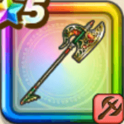

ドランゴの闘斧
攻略班 8.0点 / ブレードガード闘竜の本能大地裂断マキシマムドランゴレイ闘竜のちから不屈の魂
くわしい特徴
【レベル別習得スキル】 Lv1【ドラゴン】ドラゴニックバーストの斬撃・体技・ブレスダメージ+10% Lv3【ニンジャ】影縫いの発動率+3% Lv10ブレードガード（消費MP：7）自身のガード率を1段階上げる Lv15闘竜の本能（消費MP：最大MPの15%）ブレス攻撃の威力を上げ、敵からの攻撃でHP20%になった時に1回だけHPを全快する効果を付与(戦闘中1回のみ使用可能) Lv20大地裂断（消費MP：43）敵全体に威力380%のジバリア属性斬撃ダメージを与え、たまに転ばせる Lv30マキシマムドランゴレイ（消費MP：50）敵単体にギラ属性のブレス絶大ダメージを与え、ブレス耐性あるいはしゅび力をまれに下げる Lv35マシン系へのダメージ+5% Lv40物質系へのダメージ+5% Lv45攻撃力+12 Lv50闘竜のちから（消費MP：18）マキシマムドランゴレイでたまにブレス会心が発生し、ニンジャ・ドラゴン装備時に職業固有特性が発生した後の一撃は必ずブレス会心になる(効果6ターン) Lv50不屈の魂（消費MP：6）戦闘開始時にHP20%以上で致死ダメージ時に1回だけHP1で生き残る効果を付与する(効果6ターン) 【限界突破スキル】 1凸スキルの斬撃・体技・ブレスダメージ+7% 2凸スキルの斬撃・体技・ブレスダメージ+7% 3凸スキルの斬撃・体技・ブレスダメージ+7% 4凸スキルの斬撃・体技・ブレスダメージ+7%